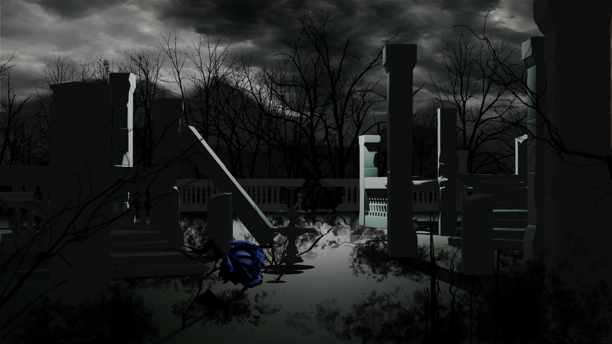
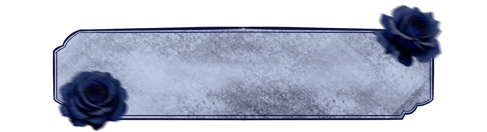
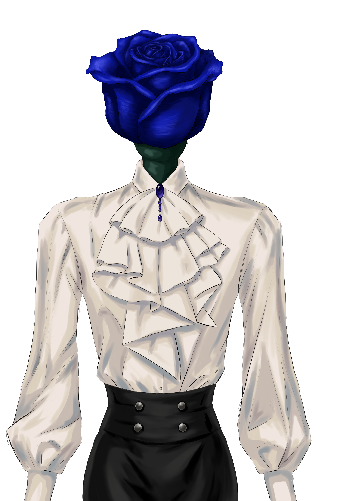

Now you’ve seen what this garden used to be.
The blue roses never hurt anyone.
They were simply different.
But people began to fear
what they didn’t understand.
Rumors and gossip
brought the garden to ruin.
And eventually, they forgot us.
Tell me... is being different
really something to be afraid of?
Let me tell you another story
about this garden’s past.
Now you know what happened
to this garden.
We never brought anyone misfortune.
We were simply different.
But people feared us,
and eventually, they forgot us.
Do you think we deserved to be forgotten?